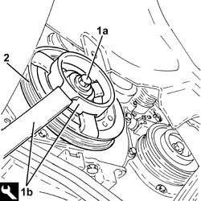
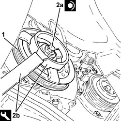
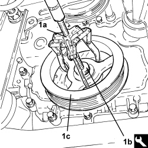
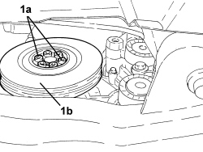
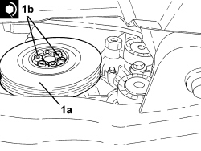

1092A10 CRANKSHAFT PULLEY - R + R
- Path
- Procedures > 10 ENGINE > 1092 ENGINE COMPONENT MISCELLANEOUS DRIVES > 1092A CRANKSHAFT PULLEY AND IDLE PULLEYS > 1092A10 CRANKSHAFT PULLEY - R + R
- Kind
- repair procedure (removal / refitting; the operation number is the code)
- Applies to
- all engines; all production periods
- Interactive page
- https://sloeber94.github.io/elrnDB-aBrrSpdr/en/#/946002028
Applies to: engines: 2.2 JTS; all production periods
 Removing
Removing
 Refitting
Refitting- Position the vehicle on a lift.
Op. 4450B04 RIGHT FRONT WHEEL - R.R
Op. 7055B66 ENGINE COMPARTMENT DUST COVER IN RIGHT FRONT WHEEL ARCH - R.R.
Op. 1048A28 VACUUM AIR CIRCUIT RESONATOR PIPE - R+R
Op. 1048A34 HOSE(S) FROM FLOW METER TO AIR SUPPLY CAPACITY CASE - R + R
Op. 1092C26 BELT FROM AIR CONDITIONER COMPRESSOR DRIVING POWER STEERING PUMP - R + R
Op. 1092G10 SINGLE ENGINE BELT - R.R
1. Undo the nut (1a) securing the crankshaft pulley using the tool (1b) for counter-torque.
Tool | Description | Function | Validity |
|---|---|---|---|
2000001000 | Counter-torque | Loosen/ tighten bolt securing crankshaft pulley | 1.9 JTS 2.2 JTS |
2. Remove the crankshaft pulley.

Applies to: engines: 2.2 JTS; all production periods
Refitting
Removing1. Place the crankshaft pulley in its housing.
2. Tighten a new bolt (2a) securing the crankshaft pulley to the recommended torque using the tool (2b) for counter-torque.
Component | Fastening | dia | Value (daNm) | Validity |
|---|---|---|---|---|
Services pulley on crankshaft | Bolt (to be replaced) | M14 | (crankshaft side) 9.0 - 11.0 + 75° | 1.9 JTS 2.2 JTS |
Tool | Description | Function | Validity |
|---|---|---|---|
2000001000 | Counter-torque | Loosen/ tighten bolt securing crankshaft pulley | 1.9 JTS 2.2 JTS |

Applies to: engines: 2.2 JTS; all production periods
Op. 1092G10 SINGLE ENGINE BELT - R.R
Op. 1092C26 BELT FROM AIR CONDITIONER COMPRESSOR DRIVING POWER STEERING PUMP - R + R
Op. 1048A34 HOSE(S) FROM FLOW METER TO AIR SUPPLY CAPACITY CASE - R + R
Op. 1048A28 VACUUM AIR CIRCUIT RESONATOR PIPE - R+R
Op. 7055B66 ENGINE COMPARTMENT DUST COVER IN RIGHT FRONT WHEEL ARCH - R.R.
Op. 4450B04 RIGHT FRONT WHEEL - R.R
- Remove the vehicle from the lift.
Applies to: engines: 3.2 JTS; all production periods
Removing
Refitting- Position the vehicle on a lift.
Op. 4450B04 RIGHT FRONT WHEEL - R.R
Op. 7055B66 ENGINE COMPARTMENT DUST COVER IN RIGHT FRONT WHEEL ARCH - R.R.
Op. 7055B91 RIGHT FRONT WHEEL ARCH LINER - R.R.
Op. 1008B10 POWER UNIT FRONT SUPPORT FLEXIBLE MOUNTING (TIMING SIDE) - REPLACE
Op. 1008A46 POWER UNIT RIGID SUPPORT - TIMING SIDE - R.R.
Op. 1092G10 SINGLE ENGINE BELT - R.R
- Undo the bolt fixing the services pulley on the crankshaft.
1. Using a universal extractor (1a) and the reaction disc (1b), remove the services pulley on the crankshaft (1c).
Tool | Description | Function | Validity |
|---|---|---|---|
1845028000 | Reaction disc | Removing services pulley on crankshaft | 3.2 JTS |

Applies to: engines: 3.2 JTS; all production periods
Refitting
Removing- Place the services pulley in position on the crankshaft and tighten the bolt to the recommended torque.
Component | Fastening | dia | Value (daNm) | Validity |
|---|---|---|---|---|
Services pulley on crankshaft | Bolt | - | 10.0 + 150 ° | 3.2 JTS |
Op. 1092G10 SINGLE ENGINE BELT - R.R
Op. 1008A46 POWER UNIT RIGID SUPPORT - TIMING SIDE - R.R.
Op. 1008B10 POWER UNIT FRONT SUPPORT FLEXIBLE MOUNTING (TIMING SIDE) - REPLACE
Op. 7055B91 RIGHT FRONT WHEEL ARCH LINER - R.R.
Op. 7055B66 ENGINE COMPARTMENT DUST COVER IN RIGHT FRONT WHEEL ARCH - R.R.
Op. 4450B04 RIGHT FRONT WHEEL - R.R
- Remove the vehicle from the lift.
Applies to: engines: 2.4 JTD 20v; all production periods
Removing
Refitting- Position the vehicle on a lift.
Op. 1048A41 HOSE FROM FLOW METER TO TURBOCHARGER - R.R.
Op. 4450B04 RIGHT FRONT WHEEL - R.R
Op. 7055B66 ENGINE COMPARTMENT DUST COVER IN RIGHT FRONT WHEEL ARCH - R.R.
Op. 7055B91 RIGHT FRONT WHEEL ARCH LINER - R.R.
Op. 1092G10 SINGLE ENGINE BELT - R.R
1. Undo the bolts (1a) and remove the service pulley on the crankshaft (1b).

Applies to: engines: 2.4 JTD 20v; all production periods
Refitting
Removing1. Position the crankshaft service pulley (1a) in its housing and secure it tightening the bolts (1b) to the recommended torque.
Component | Fastening | dia | Value (daNm) | Validity |
|---|---|---|---|---|
Services pulley on crankshaft | Bolt | M8 | (crankshaft side) 2.3 - 2.5 | 2.4 JTD 20V |

Applies to: engines: 2.4 JTD 20v; all production periods
Op. 1092G10 SINGLE ENGINE BELT - R.R
Op. 7055B91 RIGHT FRONT WHEEL ARCH LINER - R.R.
Op. 7055B66 ENGINE COMPARTMENT DUST COVER IN RIGHT FRONT WHEEL ARCH - R.R.
Op. 4450B04 RIGHT FRONT WHEEL - R.R
Op. 1048A41 HOSE FROM FLOW METER TO TURBOCHARGER - R.R.
- Remove the vehicle from the lift.
Topics linked from this page (10)
- 1008A46 POWER UNIT RIGID SUPPORT - TIMING SIDE - R.R.
- 1008B10 POWER UNIT FRONT SUPPORT FLEXIBLE MOUNTING (TIMING SIDE) - REPLACE
- 1048A28 VACUUM AIR CIRCUIT RESONATOR PIPE - R+R
- 1048A34 HOSE(S) FROM FLOW METER TO AIR SUPPLY CAPACITY CASE - R + R
- 1048A41 HOSE FROM FLOW METER TO TURBOCHARGER - R.R.
- 1092C26 BELT FROM AIR CONDITIONER COMPRESSOR DRIVING POWER STEERING PUMP - R + R
- 1092G10 SINGLE ENGINE BELT - R.R
- 4450B04 RIGHT FRONT WHEEL - R.R
- 7055B66 ENGINE COMPARTMENT DUST COVER IN RIGHT FRONT WHEEL ARCH - R.R.
- 7055B91 RIGHT FRONT WHEEL ARCH LINER - R.R.
Topics that link to this page (8)
- 1020D14 FRONT CRANKSHAFT OIL SEAL COVER - R.R AND REPLACE SEALS FOR VERSIONS WITH OIL PUMP ON CRANKSHAFT, TIMING SIDE
- 1020D18 FRONT CRANKSHAFT COVER OIL SEAL - R.R.
- 1032A10 CHAIN GEARS AND TIMING SYSTEM COMPONENTS R R
- 1032A12 TIMING SYSTEM DRIVE CHAIN - R.R
- 1032C41 TIMING SYSTEM FIXED CHAIN TENSIONER PAD R R
- 1036L30 FRONT OIL SEAL FOR CAMSHAFT IN CAMSHAFT HOUSING - REPLACE
- 1084B12 ENGINE OIL PUMP - R+R
- 1092B92 WATER PUMP /BALANCING SHAFT DRIVE CHAIN HYDRAULIC TENSIONER R R